Hakea flexblade — design renders Quick gallery; full recap page coming. Click an image to open full size.
Current 5" lead (on paper)
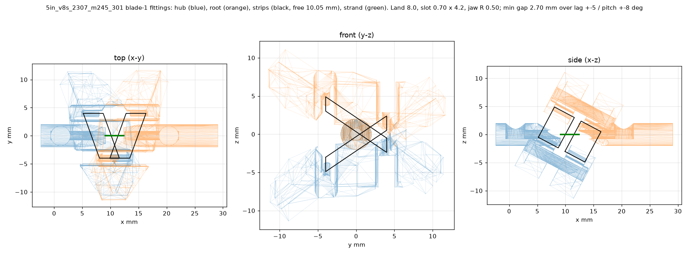
build/5in_301/drawing.png 10" designs (research reference)
build/10in_easy/drawing.png 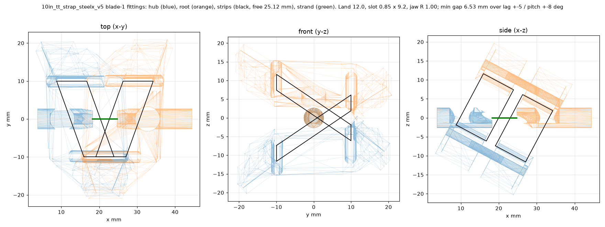
build/10in_v8/drawing.png 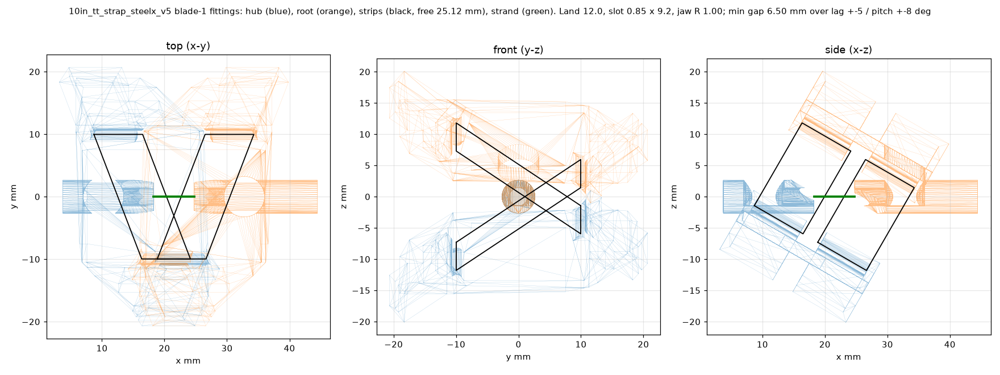
build/10in_v5/drawing.png 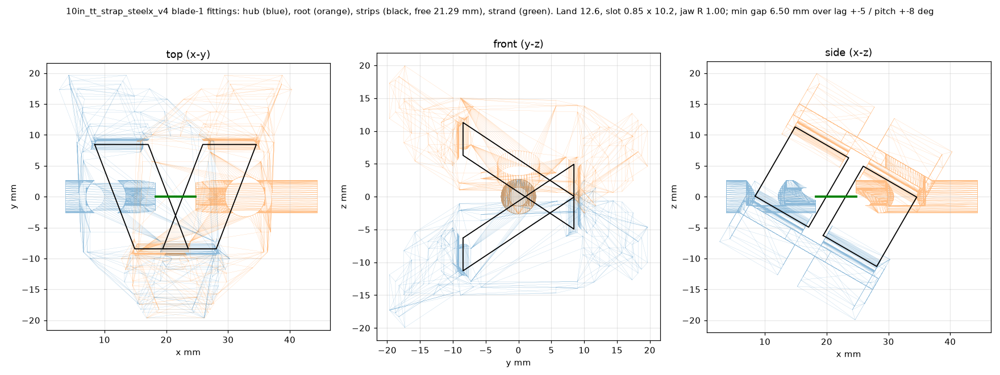
build/10in_v4/drawing.png 7" designs (old CRM2204 motor target)
build/7in_v6/drawing.png 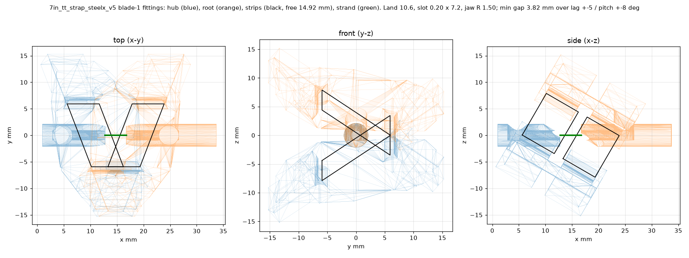
build/7in_v5/drawing.png 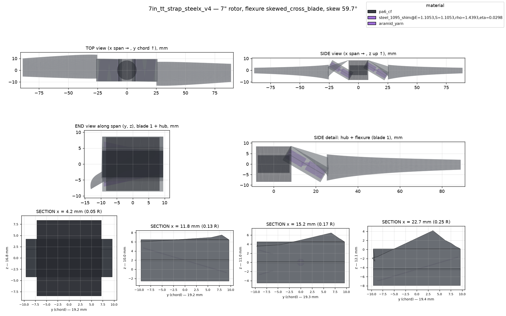
build/7in_v4/drawing.png Concept families explored
results/steelx_5in.png results/steelx_7in_v5.png results/steelx_10in_v4.png 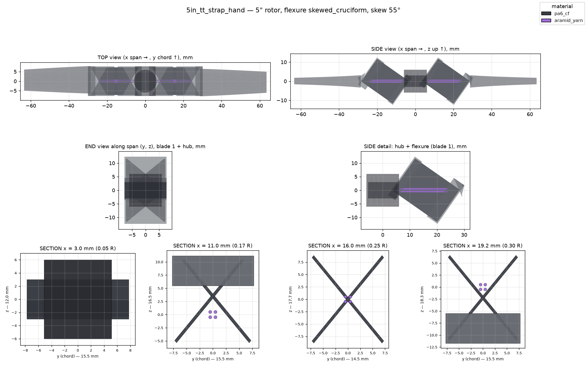
results/strap_5in.png 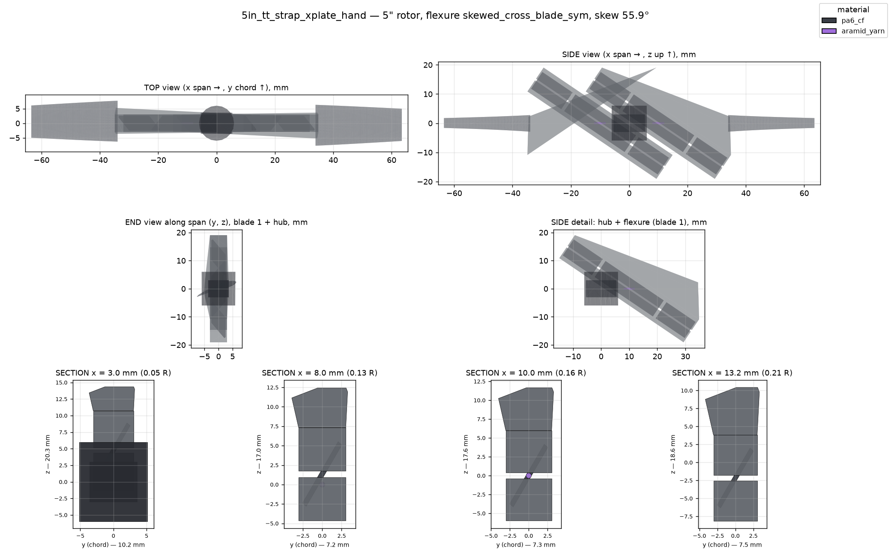
results/strap_xplate_5in.png 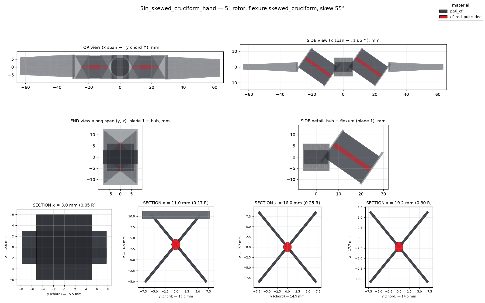
results/cruciform_5in.png results/root_5in_tpu_rod_winner_before.png 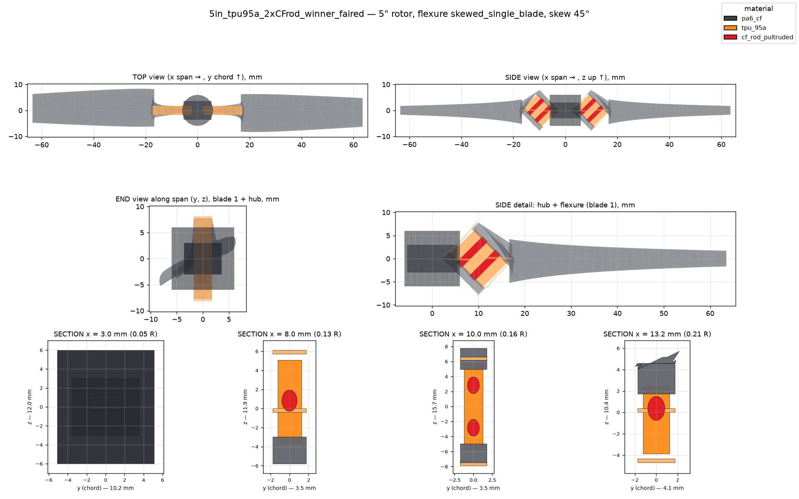
results/root_5in_tpu_rod_winner_after.png results/root_5in_tt_strap_hand_after.png Analysis figures
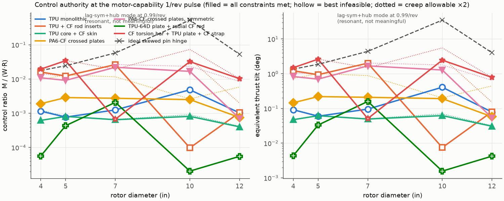
figures/control_ratio_vs_size.png 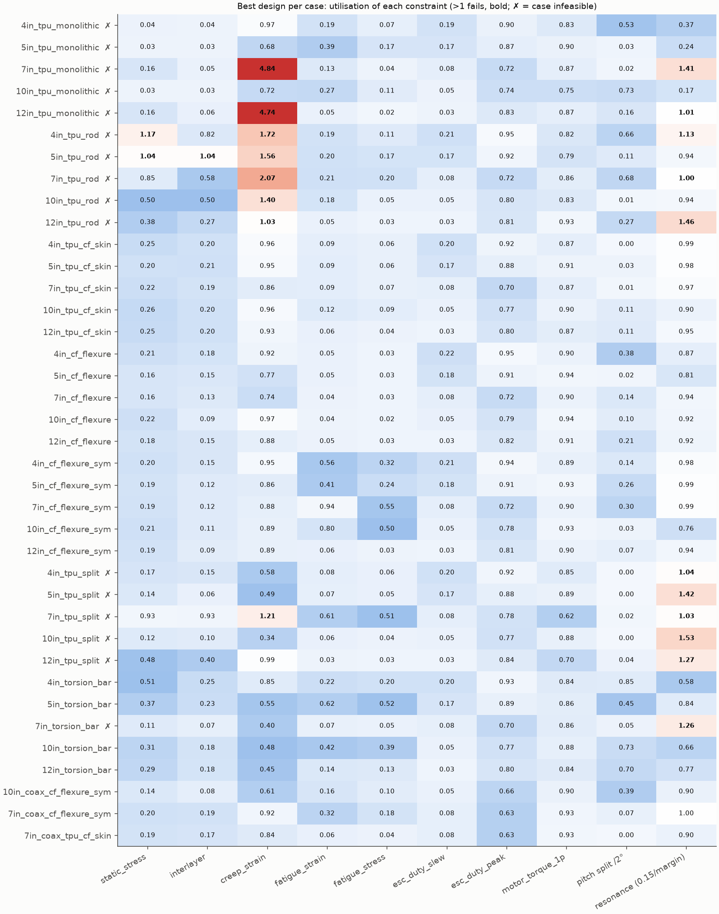
figures/utilisation_breakdown.png 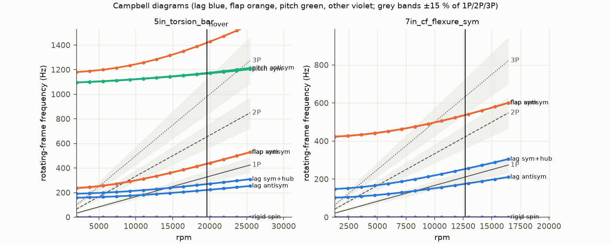
figures/campbell_winners.png results/lag_tuning.png results/validate_bench.png